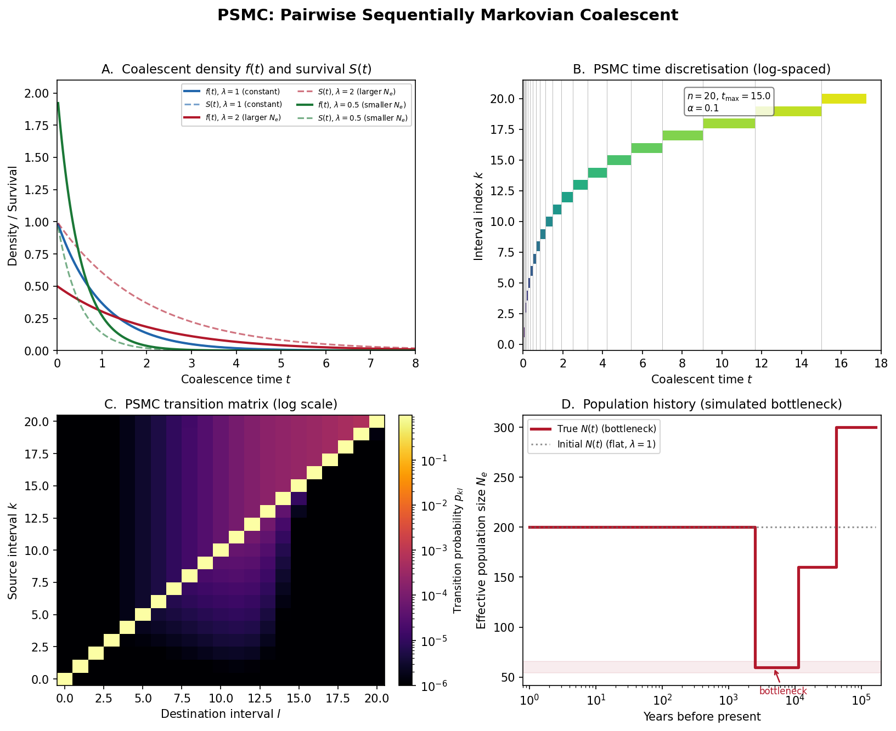

Overview of PSMC
Before assembling the watch, lay out every part and understand what it does.
{kind=link}

PSMC at a glance. Panel A: Coalescent density and survival functions under different population sizes – the statistical foundation that connects coalescence times to demography. Panel B: Log-spaced time discretization converting continuous time into HMM states. Panel C: The transition matrix heatmap showing how coalescence times change between adjacent genomic bins. Panel D: Population size reconstruction – true vs inferred \(N(t)\) under a bottleneck scenario, demonstrating that the algorithm recovers the correct demographic history.
Imagine holding the simplest watch that still tells useful time. It has just two hands – no complications, no chronograph, no moon phase. Yet those two hands, driven by a precise internal mechanism, can tell you something profound: what time it is. The PSMC is exactly this kind of instrument. It takes the two haploid copies of a single diploid genome – just two “hands” – and from nothing more than the pattern of similarities and differences between them, reads out the population size history of an entire species stretching back hundreds of thousands of years.
This chapter lays out every part of the PSMC on the watchmaker’s bench. We will not assemble anything yet. Instead, we will name each gear, explain what it does, and show how the parts fit together into a working mechanism. The actual assembly – the derivations, the code, the verification – happens in the chapters that follow.
If you have not yet worked through the prerequisite chapters on coalescent theory, hidden Markov models, and the SMC approximation, now is a good time. Those chapters built the fundamental tools – the escapement, the gear train, and the Markov property – that PSMC assembles into its first complete Timepiece.
What Does PSMC Do?
Given a single diploid genome, PSMC infers the effective population size \(N(t)\) as a function of time.
What is “effective population size”?
The effective population size \(N_e\) is not a head-count of every individual alive at some moment in the past. It is a more subtle quantity: the size of an idealized population (a Wright-Fisher population, as described in Coalescent Theory) that would produce the same patterns of genetic variation as the real population. Real populations have unequal sex ratios, overlapping generations, population structure, and many other complications. The effective population size absorbs all of these complications into a single number that captures their net effect on genetic drift.
Concretely, when PSMC reports \(N(t) = 50{,}000\) at some time in the past, it means: “the level of genetic diversity in this genome is consistent with a population that behaved, genetically speaking, as if it had 50,000 randomly mating diploid individuals at that time.” The actual census population could have been larger (if population structure reduced effective mixing) or smaller (though this is less common).
Think of it this way: the effective population size is like the “effective temperature” of a room. A room might have a heater in one corner and a window in another, but the thermometer on the wall gives you a single number that summarizes the thermal environment. The effective population size similarly summarizes the genetic environment.
The input to PSMC is deceptively simple: a sequence of 0s and 1s, where 0 means “homozygous” (the two chromosome copies are identical in this region) and 1 means “heterozygous” (they differ). Each entry corresponds to a genomic bin – a window of \(s\) base pairs (typically \(s = 100\)).
What is a “bin” and why do we bin the data?
A bin is simply a contiguous window of \(s\) base pairs along the genome. We divide the entire genome into non-overlapping bins and summarize each one with a single bit: 1 if at least one heterozygous site exists within the window, 0 otherwise.
Why not work at single-base-pair resolution? Two reasons. First, computational tractability: a human genome has roughly 3 billion base pairs, and running the HMM forward-backward algorithm on a sequence of 3 billion positions would be extremely slow. Binning into 100-bp windows reduces the sequence length by a factor of 100, to about 30 million – still long, but manageable. Second, information content: at the per-site level, mutations are very rare (roughly 1 in 1,000 base pairs is heterozygous in humans), so most individual sites are uninformative 0s. Binning aggregates the signal without losing much information, because the probability of a bin being heterozygous is a smooth function of the coalescence time (as we will see in the emission probability below).
where \(N_0\) is a reference population size and \(\lambda(t)\) is the relative population size at time \(t\) (so \(\lambda(t) = 1\) means the population is at its reference size, \(\lambda(t) = 2\) means twice as large, etc.).
The Core Physical Picture
At every position along the genome, your two chromosome copies share a most recent common ancestor (MRCA). The time to this MRCA is the coalescence time \(T\) – a concept we developed in detail in Coalescent Theory.
Copy 1 --------+
| <-- coalescence time T
Copy 2 --------+
|
MRCA
|
(past)
This is why PSMC is a “two-hand watch.” Each chromosome copy is one hand. Their meeting point in the past – the MRCA – is the time being measured. The heterozygous sites scattered along the genome are the tick marks on the dial: each one records a mutation that occurred since the two copies diverged. More tick marks in a region means the hands were further apart (longer coalescence time); fewer tick marks means they were closer together (shorter coalescence time).
Three things determine the pattern of heterozygosity along the genome:
Mutations accumulate proportionally to time. A site is heterozygous if a mutation occurred on either lineage since the MRCA. Longer coalescence time \(T\) = more opportunity for mutations = more heterozygous sites. This is the link between the hidden quantity (time) and the observable quantity (heterozygosity) – the gearing ratio that connects the internal mechanism to the dial.
Recombination reshuffles the genealogy. At recombination breakpoints, the genealogy changes: the two copies may trace back to a different MRCA with a different coalescence time. So \(T\) varies along the genome. As we saw in the SMC chapter, the SMC approximation makes this variation Markov: the coalescence time at the next bin depends only on the coalescence time at the current bin, not on the entire history.
Population size shapes the distribution of \(T\). In a large population, it takes longer for two lineages to find a common ancestor (there are many individuals, so the chance of sharing a parent is low). In a small population (a bottleneck), coalescence happens quickly. The distribution of \(T\) is therefore an imprint of the population size history \(N(t)\). This is the fundamental insight that makes PSMC possible: the genome remembers its demographic past in the pattern of coalescence times, and that pattern is visible through the lens of heterozygosity.
Terminology
Before going further, let us establish the notation we will use throughout the PSMC chapters. Every symbol here has a concrete physical meaning – take a moment to understand each one, because they will reappear in every derivation that follows.
Term |
Definition |
|---|---|
Coalescence time \(T_a\) |
The time to the MRCA of the two haplotypes at genomic position \(a\), measured in coalescent time units (multiples of \(2N_0\) generations, as established in Coalescent Theory). This is the hidden variable that PSMC seeks to infer. |
Heterozygous site |
A position where the two haplotypes differ (\(X_a = 1\)). Each heterozygous site is evidence of a mutation that occurred since the MRCA – a tick mark on the dial. |
Homozygous site |
A position where the two haplotypes are identical (\(X_a = 0\)). The absence of a tick mark – either no mutation occurred, or (very rarely) two mutations at the same site cancelled each other out. |
Bin |
A genomic window of \(s\) base pairs (default \(s = 100\)). \(X_a = 1\) if at least one heterozygous site exists in the bin; \(X_a = 0\) otherwise. Bins are the resolution at which PSMC reads the genome. |
\(\theta_0\) |
Population-scaled mutation rate per bin: \(4N_0 \mu s\), where \(\mu\) is the per-base-pair per-generation mutation rate and \(s\) is the bin size. This parameter controls how rapidly tick marks accumulate on the dial as coalescence time increases. |
\(\rho_0\) |
Population-scaled recombination rate per bin: \(4N_0 r s\), where \(r\) is the per-base-pair per-generation recombination rate. This parameter controls how frequently the genealogy changes between adjacent bins – how often the hidden state transitions. |
\(\lambda(t)\) |
Relative population size at time \(t\): \(N(t) = N_0 \lambda(t)\). This is what PSMC ultimately estimates. A value of \(\lambda(t) = 1\) means the population is at its reference size; \(\lambda(t) = 2\) means twice as large; \(\lambda(t) = 0.5\) means half as large. |
\(\Lambda(t)\) |
Cumulative coalescence intensity: \(\Lambda(t) = \int_0^t \frac{du}{\lambda(u)}\). This quantity measures the cumulative “difficulty” of avoiding coalescence up to time \(t\). When the population is small (\(\lambda(u)\) is small), coalescence is likely and \(\Lambda\) increases rapidly. When the population is large, \(\Lambda\) increases slowly. You can think of \(\Lambda(t)\) as a “stretched clock” – it runs fast during bottlenecks and slow during expansions. This will be derived carefully in the continuous model chapter. |
\(N_0\) |
Reference effective population size. This is a scaling parameter: PSMC estimates relative sizes \(\lambda(t)\), and \(N_0\) converts them to absolute sizes. In practice, \(N_0\) is recovered from the estimated \(\theta_0\) via \(N_0 = \theta_0 / (4\mu s)\). |
\(t\) |
Time measured in coalescent time units: multiples of \(2N_0\) generations. As established in Coalescent Theory, this is the natural timescale of the coalescent, where the coalescence rate for two lineages in a constant-size population is exactly 1. |
Why measure time in units of \(2N_0\) generations?
This is the natural timescale of the coalescent, as we derived in Coalescent Theory. In a diploid population of size \(N\), the expected time for two randomly chosen gene copies to coalesce is \(2N\) generations. By measuring time in these units, the coalescence rate becomes 1 when \(\lambda(t) = 1\), which simplifies all the math. The coalescence rate at time \(t\) is \(1/\lambda(t)\): larger populations mean lower coalescence rates.
Parameters
PSMC estimates three types of parameters. Together, they fully specify the HMM and determine the population size history.
Parameter |
Symbol |
Physical meaning |
|---|---|---|
Mutation rate |
\(\theta_0\) |
Controls the density of tick marks on the dial. A higher \(\theta_0\) means more heterozygous sites per unit coalescence time, making the coalescence time easier to “read” from the data. |
Recombination rate |
\(\rho_0\) |
Controls how frequently the genealogy changes along the genome. A higher \(\rho_0\) means more transitions between coalescence time states, which provides more independent “readings” of the population size at different times. |
Population sizes |
\(\lambda_0, \ldots, \lambda_n\) |
The relative population size in each time interval. These are the primary quantities of interest – the numbers that will be plotted as the population size history. |
What does “piecewise constant” mean?
PSMC assumes that \(\lambda(t)\) is a piecewise constant function. This means the time axis is divided into \(n + 1\) intervals \([t_0, t_1), [t_1, t_2), \ldots, [t_n, t_{n+1})\), and within each interval the relative population size is a single constant value \(\lambda_k\).
Picture a staircase. Each step is flat (constant population size within an interval), and the steps can be at different heights (different population sizes in different intervals). The function jumps from one height to the next at the interval boundaries but is constant in between.
This is not a biological assumption – nobody believes population size actually changed in discrete jumps. It is a computational convenience: it turns the problem of estimating a continuous function \(\lambda(t)\) (which has infinitely many degrees of freedom) into the problem of estimating a finite set of numbers \(\lambda_0, \ldots, \lambda_n\). More intervals give finer resolution but risk overfitting to noise. Fewer intervals are more robust but might miss real demographic events.
The intervals are chosen to be approximately log-spaced in time, giving
fine resolution in the recent past (where the data is most informative) and
coarse resolution in the distant past. Adjacent intervals can share the same
\(\lambda\) parameter to further reduce overfitting – this is what the
-p pattern in the PSMC software controls.
Why is the ratio \(\theta_0 / \rho_0\) fixed?
PSMC typically fixes the ratio \(\theta_0 / \rho_0\) (the default value is 5) rather than estimating both rates independently. The reason is identifiability: from a single diploid genome, it is very difficult to separately estimate the mutation rate and the recombination rate. Both parameters affect the data in partially overlapping ways – increasing the mutation rate makes the sequence “look” similar to decreasing the recombination rate, and vice versa.
By fixing their ratio, PSMC essentially says: “I know the relative rates of mutation and recombination from external evidence (e.g., pedigree studies), and I will use that knowledge as a constraint.” This reduces the number of free parameters by one and makes the remaining parameters (the overall scale \(\theta_0\) and the population sizes \(\lambda_k\)) better identifiable.
In the watch metaphor, fixing \(\theta_0 / \rho_0\) is like knowing the gear ratio between two wheels in advance. You still need to determine how fast the mainspring unwinds, but you know exactly how the two wheels relate to each other.
The Data: From BAM to Binary Sequence
The input to PSMC is prepared in two steps. The process converts a complex genomic dataset into the simple binary sequence that the HMM operates on.
Call consensus: From aligned reads (a BAM file), generate a diploid consensus sequence where each base is labeled as heterozygous or homozygous. This step uses standard variant calling tools and quality filters to distinguish genuine heterozygous sites from sequencing errors.
Bin: Divide the genome into non-overlapping windows of \(s\) base pairs (default 100). Mark a bin as “1” if it contains at least one heterozygous site, “0” otherwise. Bins with insufficient data (low coverage or poor mapping quality) are marked as “N” and excluded from the analysis.
The following code simulates this process. Instead of starting from real genomic data, we simulate the underlying coalescent process directly, which lets us verify that PSMC can recover the true parameters.
import numpy as np
def simulate_psmc_input(L, theta, rho, lambda_func, n_bins=None):
"""Simulate a PSMC input sequence.
This simulates the process that generates the data PSMC sees:
- Draw coalescence times along the genome using the SMC
- Given each coalescence time, flip a coin for het/hom
Parameters
----------
L : int
Number of bins.
theta : float
Mutation rate per bin (theta_0).
rho : float
Recombination rate per bin (rho_0).
lambda_func : callable
lambda_func(t) returns relative population size at time t.
This is a Python function (see the "lambda" explanation below).
Returns
-------
seq : ndarray of shape (L,), dtype=int
Binary sequence: 0 = homozygous, 1 = heterozygous.
coal_times : ndarray of shape (L,)
True coalescence times (for verification).
"""
# np.zeros(L, dtype=int) creates an array of L integers, all initially 0.
seq = np.zeros(L, dtype=int)
coal_times = np.zeros(L)
# Draw first coalescence time from stationary distribution.
# For constant lambda: T ~ Exp(1).
# np.random.exponential(scale) draws a random number from the
# exponential distribution with the given scale (= 1/rate).
# So scale=1.0 gives rate=1, matching the coalescent with constant
# population size (see coalescent_theory).
t = np.random.exponential(1.0) # simplified: constant pop
coal_times[0] = t
for a in range(L):
# Emission: het with prob 1 - exp(-theta * t).
# This is the probability that at least one mutation occurred
# in a bin of 'theta' expected mutations over coalescence time t.
# It comes from the Poisson model of mutations: the probability
# of zero mutations is exp(-theta * t), so the probability of
# at least one is 1 - exp(-theta * t).
p_het = 1 - np.exp(-theta * t)
# np.random.binomial(1, p) performs a single Bernoulli trial:
# it returns 1 with probability p and 0 with probability 1-p.
# This is the "coin flip" that determines whether the bin is
# heterozygous. The name "binomial" comes from the binomial
# distribution; with n=1 trial, it reduces to a Bernoulli trial.
seq[a] = np.random.binomial(1, p_het)
coal_times[a] = t
if a < L - 1:
# Recombination? The probability of at least one recombination
# on the pair of branches (total length 2t, rate rho/2 each)
# is 1 - exp(-rho * t). See the SMC chapter for the derivation.
if np.random.random() < 1 - np.exp(-rho * t):
# Recombination occurred. Pick a time u uniformly on [0, t]
# (the recombination can strike anywhere on the branch).
u = np.random.uniform(0, t)
# Re-coalescence: starting from time u, wait an Exp(1) time
# for the detached lineage to find the other lineage again.
# np.random.exponential(1.0) draws from Exp(rate=1),
# where the scale parameter equals 1/rate = 1.0.
t = u + np.random.exponential(1.0)
# If no recombination, t stays the same (the coalescence time
# carries over to the next bin unchanged).
return seq, coal_times
# Simulate a short genome.
# np.random.seed(42) makes the random number generator reproducible:
# you will get the same output every time you run this code.
np.random.seed(42)
# lambda t: 1.0 is a Python "lambda function" -- an anonymous, one-line
# function. It takes one argument (t) and returns 1.0 regardless of t.
# This represents a constant population size (lambda(t) = 1 for all t).
seq, times = simulate_psmc_input(10000, theta=0.001, rho=0.0005,
lambda_func=lambda t: 1.0)
print(f"Sequence length: {len(seq)}")
print(f"Fraction heterozygous: {seq.mean():.4f}")
print(f"Mean coalescence time: {times.mean():.4f}")
The Flow in Detail
Now that we have named all the parts, let us see how they mesh together into a working mechanism. The flow below shows the complete PSMC pipeline, from raw data to population size history. Each step uses concepts from the prerequisite chapters; we note the connections explicitly.
The process is iterative: PSMC starts with an initial guess for the population sizes, builds an HMM from that guess, uses the forward-backward algorithm to compute expected statistics of the hidden coalescence times, then updates its guess to better explain the data. This cycle repeats until convergence. This is the Expectation-Maximization (EM) algorithm – a general-purpose method for estimating parameters of models with hidden variables.
Diploid genome
|
v
Call consensus + bin into 0/1/N
(Convert the raw genome into a binary sequence that the HMM can read)
|
v
X = (0, 0, 1, 0, 0, 0, 1, 1, 0, 0, 1, ...)
|
v
Choose time intervals t_0 < t_1 < ... < t_n (log-spaced discretization)
Initialize lambda_k = 1 for all k (start with constant population)
|
v
+-----> Build transition matrix p_{kl}
| (How likely is the coalescence time to change from interval k
| to interval l between adjacent bins? Uses the SMC transition
| density from the SMC chapter, discretized into intervals.)
|
| Build emission probabilities e_k(0), e_k(1)
| (How likely is a bin to be het/hom given coalescence time in
| interval k? Uses the Poisson mutation model.)
| |
| v
| Forward-backward algorithm on X
| (Compute the probability of each hidden state at each position,
| given the observations. This is the HMM machinery from the
| HMM chapter, applied to the PSMC's specific states and emissions.)
| |
| v
| Compute expected counts (E-step)
| (How much time does the genome "spend" in each coalescence time
| interval? How many transitions occur between intervals?)
| |
| v
| Maximize Q to update theta, rho, lambda_k (M-step)
| (Given the expected counts, find the parameter values that
| maximize the expected log-likelihood.)
| |
| Converged?
| NO ---+
|
YES
|
v
Output: theta_0, rho_0, lambda_0, ..., lambda_n
|
v
Scale to real units: N(t) = theta_0 / (4 * mu * s) * lambda_k
(Convert from coalescent time units back to years and individuals,
using the known per-generation mutation rate mu and generation time.)
|
v
Plot N(t) vs time
Each step in this pipeline corresponds to a chapter in the PSMC Timepiece:
Building the transition matrix requires deriving the continuous-time transition density under variable population size, then discretizing it. This is covered in The Continuous-Time PSMC Model and Discretizing Time.
Forward-backward and EM apply the HMM algorithms from the HMM chapter to PSMC’s specific model. The details are in The PSMC HMM and EM Algorithm.
Scaling and interpretation are covered in Decoding the Clock.
Ready to Build
You now have the high-level blueprint. Every part is laid out on the bench, named, and explained. You know what the input looks like (a binary sequence of het/hom calls), what the output is (a piecewise-constant population size history), and what mechanism connects the two (an HMM whose hidden states are discretized coalescence times).
In the following chapters, we build each gear from scratch:
The Continuous-Time PSMC Model – The continuous-time transition density under variable \(N(t)\). This generalizes the constant-population result from the SMC chapter to the case PSMC actually cares about: a population whose size changes over time. This is the escapement – the fundamental mathematical mechanism.
Discretizing Time – Discretizing time into intervals for the HMM. Continuous math must become finite computation before we can run algorithms on a computer. This chapter converts the continuous transition density into a discrete transition matrix.
The PSMC HMM and EM Algorithm – The complete HMM and EM parameter estimation. With the transition matrix and emission probabilities in hand, we assemble the full inference engine and estimate \(\theta_0\), \(\rho_0\), and \(\lambda_k\).
Decoding the Clock – Decoding, scaling, and interpreting the result. We convert from HMM parameters back to real-world units and learn to read the watch face.
Each chapter derives the math, explains the intuition, implements the code, and verifies it works – following the watchmaker’s philosophy of building understanding gear by gear.
Let us start with the foundation: the continuous-time model.